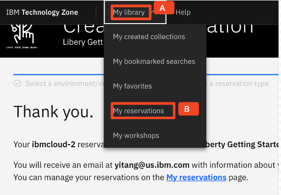
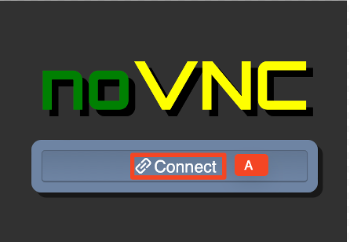
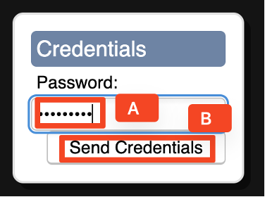

Deploy Java App to OCP Demo Environment
Hands-on setup guide
1 Introduction
This demo environment setup script walks through the prerequisite steps to setup the demo environment for doing the Deploy Java App to OpenShift Container Platform (OCP) demo.
2 Reserve demo environment
The demo environment runs in IBM Cloud. You can reserve the environment by using the following steps:
-
Launch the IBM Technology Zone Create a reservation URL.
-
Use your IBM ID to login to the IBM Technology Zone, the Create a reservation page is displayed.
-
Select Reserve now (A) button.
-
Follow the on-screen dialog to reserve an environment in an IBM Cloud data center in the closest Geography (US-Central, EMEA, Asia Pacific).
- Accept the default environment name as Liberty Container Deployment with CP4Apps on OpenShift
- Purpose: select Education
- Description: Enter a description. The field is required
- Preferred Geography: Choose an IBM Cloud datacenter in the closest geography (US, EMEA, Asia Pacific)
- End date and time: Use the calendar widget and select the maximum date available and select a time of day for the reservation to expire and select a timezone nearest to you.
- VPN Access: Select Enable from the dropdown list.
-
After the information above is entered, check the Agreement box (A) and click on the Submit (B) button.
-
The reservation takes a moment to be created. You can check its status by selecting My library (A) then clicking My reservations (B).

You see your reservation is in the Provisioning status.

It might take 15 minutes for the demo environment to be provisioned. When the environment is created, its status is changed to Ready.
3 Access the demo environment.
-
When the demo environment is provisioned, click the Reservation icon (A) to go to its details page.

-
In the reservation details page, click the Workstation VM (A) URL link to open the URL in a new browser window.
-
Click vnc.html (A) link.
-
Click the Connect (A) button.

-
Enter the password as: passw0rd (A). Then click the Send Credentials (B) button to access the lab environment.
Note: That is a numeric zero in passw0rd.

Once you log in to the Demo VM, you see the Desktop, which contains all the programs that you are going to use (browsers, terminal, and so on).
The login credentials for the demo VM are:
- User ID: techzone
- Password: passw0rd
4 Tips for working in the Demo environment
-
You can resize the viewable area by using the noVNC Settings options to resize the virtual desktop to fit your screen.
a. From the demo VM, expand the noVNC control pane (A) to open the menu.

b. To increase the visible area, click the Settings (A) and click Remote Resizing (B) from the Scaling Mode dropdown box.

-
To do copy and paste, you must copy the text from the demo guide into the demo environment by using the clipboard in the noVNC viewer.
a. Copy the text from the Demo guide that you want to paste into the Demo environment.
b. Click the Clipboard (A) icon and paste the text into the noVNC Clipboard (B).

c. Paste the text into the VM, such as to a terminal window, text editor or browser window.
d. Click on the clipboard icon again to close the clipboard.
5 Configure the demo environment
-
Clone GitHub demo artifacts.
To run the demo, you first need to clone the GitHub demo artifacts to the demo VM environment.
a. Click the terminal (A) icon.

b. Clone the GitHub repo by running the following commands from the terminal window:
cd /home/techzone git clone https://github.com/IBMTechSales/appmod-pot-labfiles.gitWhen it is done, the local demo artifacts repo will be at the /home/techzone/appmod-pot-labfiles directory on the demo VM desktop.
c. Copy the demo zip file to the /home/techzone/Downloads directory and unpack it by running the following commands:
cp /home/techzone/appmod-pot-labfiles/demo/modresorts10war.ear_migrationBundle-demo_ready.zip /home/techzone/Downloads unzip -d ~/Downloads /home/techzone/Downloads/modresorts10war.ear_migrationBundle-demo_ready.zip -
Configure Transformation Advisor.
a. Launch Transformation Advisor from the terminal window with the command:
transformation-advisor-local-3.8.1/launchTransformationAdvisor.shb. Type 5 and press Enter (A) to start the Transformation Advisor.

The Transformation Advisor is started after a few minutes.
c. Access the Transformation Advisor page from a web browser by double-clicking the browser (A) icon on the desktop.
d. Click the Transformation Advisor (A) bookmark in the browser to access it.

The Transformation Advisor page is displayed.

e. Create a workspace in Transformation Advisor by clicking Create new (A).

f. Type Evaluation (A) as the workspace name and click Create (B).

g. Upload collected WebSphere Server application data to Transformation Advisor by clicking Upload (A).

h. Click Drop or add file (A).
i. In the File Upload window, navigate to the /home/techzone/appmod-pot-labfiles/labs/TransformationAdvisor (A) folder, select AppSrv01-3.8.1.zip (B) and click Open (C).
After a few minutes, the collected WebSphere Server application data is uploaded into Transformation Advisor.
The Demo environment setup is now completed.